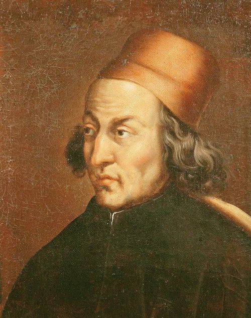

Zodiacal Melothesia
 Root Gatherer
Root Gatherer
 Spagyric (Paracelsus)
Spagyric (Paracelsus)
The Magician, Wizard, Sorcerer
Hermetic Astrological Magic, Medicine and Alchemy
Ever since the ancient world, astrology has been applied to many fields of human endeavour. In modern times these have been reduced (rationalised) to scientific disciplines, such that magic turned into physics, alchemy into chemistry and the ancient medicine into diagnostics, medical theory, surgery and applied pharmacy. Here we shall investigate what these originally really were to their fullest and most elaborate extent. To make things clear, the term Magic here means the intentional manipulation of substances in the physical world by the employment of supernatural agencies.Some Fields of Hermetic Magic Involving Astrology:
Theurgical, Medical and Alchemical
Iatromathematika
(from Greek ἰατρική "medicine" and μαθηματικά "mathematics") were medical astrologers who applied astrological correspondences to the parts of the human body to investigate disease and discover remedies.
Melothesia
(Greek: μελοθεσία) stems from the ancient assignment of astrological symbolism to the human body. It was extant in Greco-Roman astral science and based on the doctrine of sympathy between the cosmos as macrocosm, mirroring the human condition, as a microcosm. Body parts were assigned to zodiacal signs and the internal organs to planets.
| Zodiac Sign | Body Region | Body Parts / Organs |
| Aries | head | eyes, nose, ears, mouth, etc. |
| Taurus | neck | throat |
| Gemini | shoulder, armpits, arms | hands, fingers |
| Cancer | chest area | spleen, lungs, ribs |
| Leo | abdominal area | heart, back, sides |
| Virgo | stomach | intestines |
| Libra | navel, loins, buttocks | kidneys |
| Scorpio | pubic region | uterus, penis |
| Sagittarius | hips, thighs | |
| Capricorn | knees | kneecaps |
| Aquarius | calves, shins | |
| Pisces | feet | toes, soles, heels |
| Planet | Corresponding Body-Parts |
| Moon | sense of taste, stomach, abdomen, uterus, left side of the body |
| Mercury | speech and thought, tongue, gall, buttocks |
| Venus | sense of smell, liver, fleshy parts |
| Sun | sight, brain, heart, tendons, right side of the body |
| Mars | left ear, kidneys, veins, genitals |
| Jupiter | sense of touch, lungs, arteries, semen |
| Saturn | right ear, spleen, bladder, mucus, bones |
Rhizomatoi
were specialist "root-gatherers" who were the fore-runners to today's herbalists but with a magical twist. They collected all sorts of plant parts which were regarded as healing substances, and had the ultimate aim of supplying apothecaries who prepared them as drugs and dispensed them for later administration. There was a huge resurgence of this art in Italy in the middle ages.
Spagyric
is the alchemical preparation of medicines. It was Paracelsus, who coined the term spagyric and also applied this healing method in practice.
Theurgy
Theurgy (Greek: θεουργία theourgía), also known as divine magic, is one of two major branches of the magical arts, the other being practical magic or thaumaturgy. Theurgy describes the ritual practices associated with the invocation or evocation of the presence of one or more deities, also called "godforms", especially with the goal of achieving henosis, uniting with the divine, and perfecting oneself.
Goetia
is a type of European sorcery, often referred to as witchcraft, that has been transmitted through grimoires, books containing instructions for performing magical practices. The term "goetia" finds its origins in the Greek word "goes", which originally denoted diviners, magicians, healers, and seers.
Some Renowned Practioners, The Magicians
Magic has without a doubt captured the imagination of many for thousands of years. Perhaps even more exciting has been the portrayal of the magicians who practised the art. These figures, whether real or fictional, has been the subject of romantic tales of the impossible made possible. Everything from eternal life, supernatural achievements and fabulous riches have been bestowed upon these people and continue doing so up to the present day.Wizards, Magicians and Sorcerers
Many of these stem from old French tales, the French having maintained over the millenia, a firm tradition of Hermetism, coming from both the Western and the Eastern traditions.
Hermes Trismegistus

The Castle at Drumelzier near Peebles (c.1790). Drumelzier is reputedly the last resting place
of Merlin the Wild.
Myrddin Wyllt (Welsh: mərðɪn wɨɬt "Myrddin the Wild", Cornish: Merdhyn Gwyls, Breton: Merzhin Gouez), born in 540 CE, Myrddin was a figure in medieval Welsh legend. In Middle Welsh poetry he is said to have been the chief bard and the speaker of several poems in The Black Book of Carmarthen and The Red Book of Hergest. He was called Wyllt "the Wild" by Elis Gruffydd, and elsewhere Myrddin Emrys "Ambrosius", Merlinus Caledonensis "of Caledonia" or Merlin Sylvestris "of the woods". Myrddin's grave is reputed to lie near the River Tweed in the village of Drumelzier near Peebles.
The fictional figure of Merlin (Welsh: Myrddin, Cornish: Merdhyn, Breton: Merzhin) was prominently featured in the legend of King Arthur and best known as a magician, with several other main roles. The familiar depiction of Merlin, based on an amalgamation of historic and legendary figures, was introduced by the 12th-century British pseudo-historical author Geoffrey of Monmouth and then built on by the French poet Robert de Boron and prose successors in the 13th century.
Nicholas Flamel
Nicholas Flamel (c.1330 - 22.03.1418)
was a French Alchemist and manuscript seller. After his death, Flamel developed a reputation as an alchemist believed to have created and discovered the philosopher's stone and to have thereby achieved immortality. These legendary accounts first appeared in the 17th century. According to texts ascribed to Flamel almost 200 years after his death, he had learned alchemical secrets from a Jewish converso on the road to Santiago de Compostela. He has since appeared as a legendary alchemist in various fictional works.

Marsilio Ficino
Pico della Mirandola
 Johann Georg Faust
Johann Georg Faust
Paracelsus
 John Dee
John Dee
 Robert Fludd
Robert Fludd
was an Italian scholar and Catholic priest who was one of the most influential humanist philosophers of the early Italian Renaissance. He was an astrologer, a reviver of Neoplatonism in touch with the major academics of his day, and the first translator of Plato's complete extant works into Latin. He also translated the Corpus Hermeticum.
Pico della Mirandola (24.02.1463 – 17.11.1494))
was an Italian Renaissance nobleman and philosopher. He is famed for the events of 1486, when, at the age of 23, he proposed to defend 900 theses on religion, philosophy, natural philosophy, and magic against all comers, for which he wrote the Oration on the Dignity of Man, which has been called the "Manifesto of the Renaissance", and a key text of Renaissance humanism and of what has been called the "Hermetic Reformation". He was the founder of the tradition of Christian Kabbalah, a key tenet of early modern Western esotericism.
Johann Georg Faust (c.1480 - c.1541)
Faust, known as Georg or Jörg, was a wandering faith healer, alchemist, magician, astrologer and fortune teller. His life was the model for Johann Wolfgang von Goethe's most famous works "Faust I" and "Faust II".
Paracelsus (c. 1493 – 24.09.1541)
Born in Switzerland as Theophrastus von Hohenheim (full name Philippus Aureolus Theophrastus Bombastus von Hohenheim), was a physician, alchemist, lay theologian, and philosopher of the German Renaissance.
John Dee (13.10.1527 – 1608 or 1609)
Dee was an English mathematician, astronomer, teacher, astrologer, occultist, and alchemist. He was the court astronomer for, and advisor to, Queen Elizabeth I, and spent much of his time on alchemy, divination, and Hermetic philosophy. As an antiquarian, he had one of the largest libraries in England at the time.
Robert Fludd (bef. 17.01.1574 – 08.09.1637)
Our story about Hermetic Magic could actually begin at the end with the last person renowned as being capable of learning everything available at the time. This person was Robert Fludd, also known as Robertus de Fluctibus, who was a prominent English Paracelsian physician with both scientific and occult interests. He is remembered as an astrologer, mathematician, cosmologist, Qabalist and Rosicrucian. He entered St John's College, Oxford as a commoner in 1591, graduating with a B.A. in 1597 and an M.A. in 1598. St John's College, Oxford was one of the few in England with any provision for Fellowship (medicine)
Between 1598 and 1604, Fludd studied medicine, chemistry and hermeticism on the European mainland following his graduation. On his own account he spent a winter in the Pyrenees studying theurgy (the practice of rituals) with the Jesuits. Furthermore, he indicated that he travelled throughout Spain, Italy and Germany following his time in France.
While he followed Paracelsus in his medical views rather than the ancient authorities, he was also a believer that real wisdom was to be found in the writings of natural magicians, who dealt with natural forces directly. Natural magic so defined included astrology, alchemy, and disciplines that we would today consider fields of natural science, such as astronomy and chemistry (which developed and diverged from astrology and alchemy, respectively, into the modern sciences they are today) or botany (from herbology). The Jesuit scholar Athanasius Kircher wrote that "there are as many types of natural magic as there are subjects of applied sciences".
About
Hi, my name is Rod Schneider and I have created this website to illustrate how, with the help of astrology, that negativity can be converted into something more positive. The astrology being shown here is rooted in the most ancient inceptions derived from Hermetism. It is technical but in the hands of a practitioner already familiar with astrology has great potential to be helpful. There is also much help for non-astrologers to use astrology in a different manner, namely with cycles and phases.Comments and contributions are always welcome.
Contact: rodschneider35@gmail.com